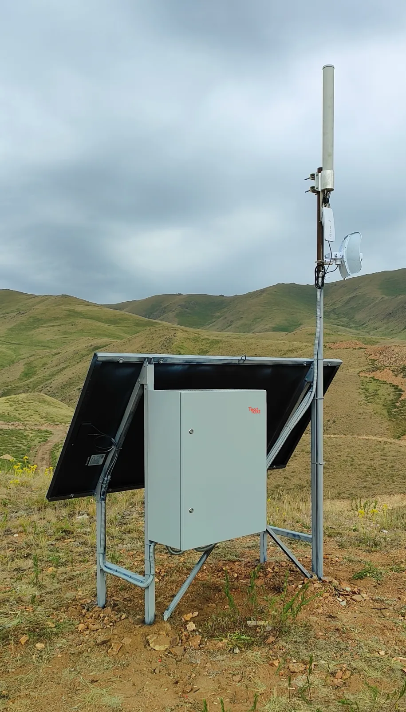
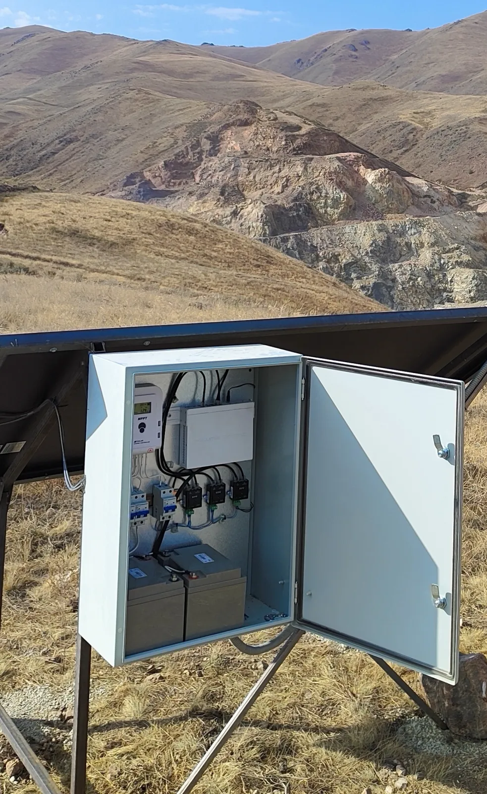
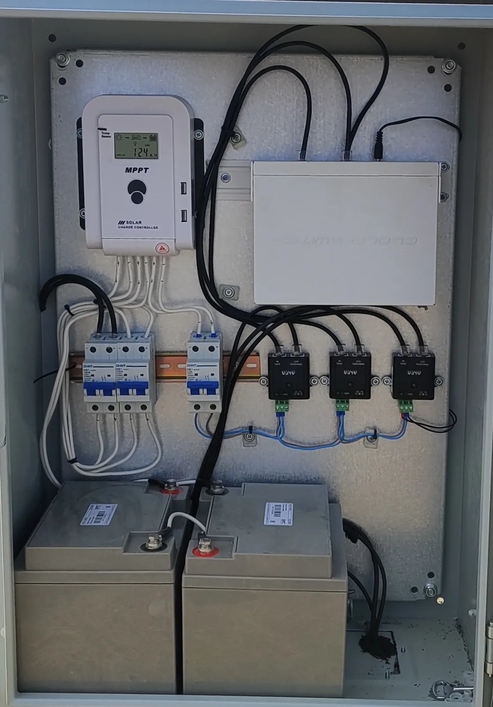
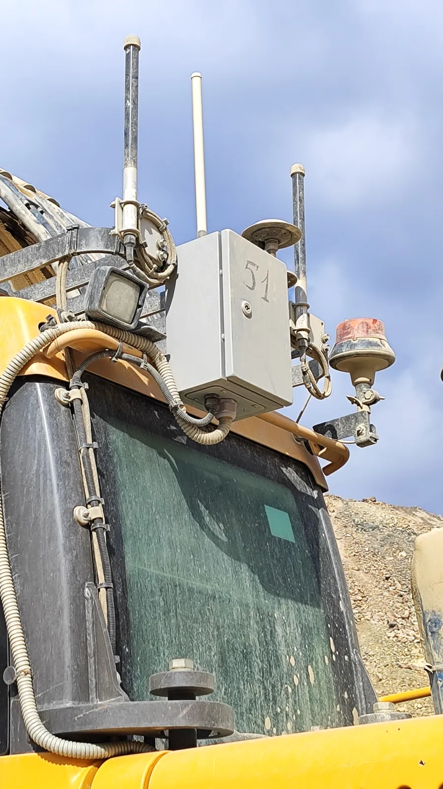
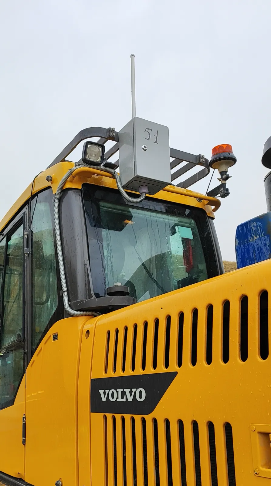
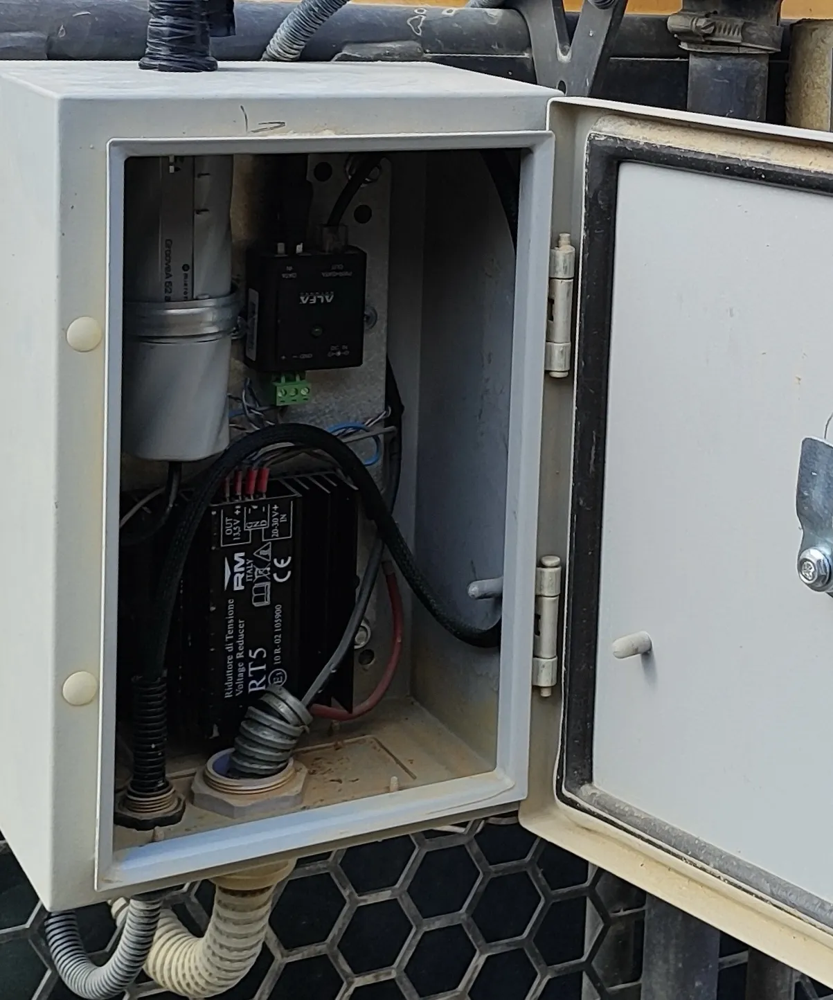
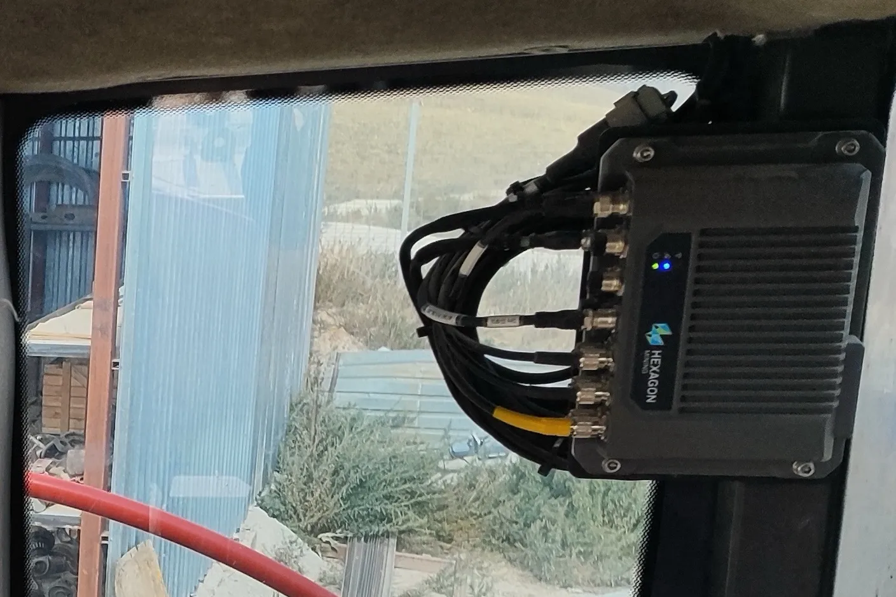
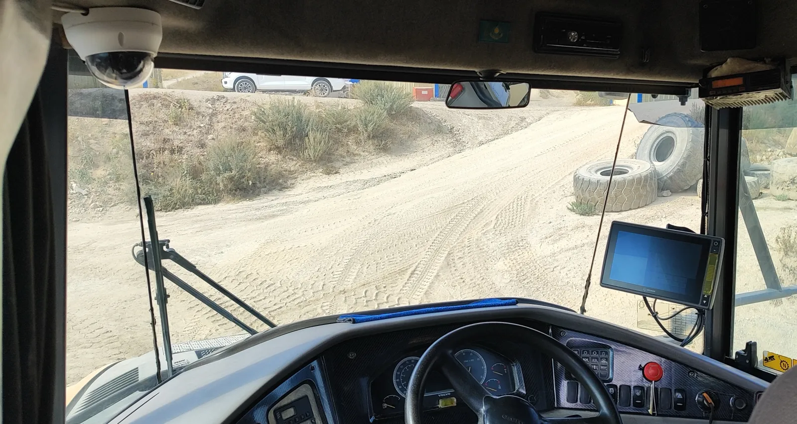

Tog'-kon transportini dispetcherlashtirishga kompleks yondashuv. Avtonom retranslyatorlarni o'rnatishdan tortib, bort kompyuterlari va V2X antennalarini montaj qilishgacha. Uskunalarni korxonaning yagona boshqaruv markaziga ulaymiz.
- Retranslyatorlaravtonom, quyosh energiyasida
- Bortkompyuterlar, GNSS va V2X antennalari
- Markazkorxonaning yagona dispetcherligi
Radioaloqa tugunlari
Murakkab relef sharoitida biz mustaqil ma'lumotlarni uzatish nuqtalarini joylashtiramiz. Ular barcha uskunalardan telemetriyani to'plash uchun WLL, WiMax va WiFi standartlarining barqaror qamrovini ta'minlaydi.


Nosozlikka chidamli shkaflar
Sanoat aloqa uskunalari barqaror kuchlanishni talab qiladi. Biz ekstremal haroratning tushishi paytida ishlashga qodir tarqatish shitlarini yig'amiz va o'rnatamiz.

Texnikaning tashqi jihozlari
Biz ATB elementlarini integratsiyalashmoqdamiz. Datchiklar, yuqori aniqlikdagi navigatsiya antennalari va V2X ni o'rnatish karyerning kuchli tebranishi va changlanishini hisobga olgan holda amalga oshiriladi.


Bort kommutatsiyasi
Joylashuv tizimlarining to'g'ri ishlashi uchun mashinaning quvvatini past oqim tizimlarining ehtiyojlariga moslashtirish kerak.

Ish joyini raqamlashtirish
Mashinistning ko'z o'ngida yagona bort interfeysini tashkil etish. Tizim yo'nalishlarni optimallashtirish uchun operatorning harakatlarini dispetcher bilan sinxronlashtirishga imkon beradi.

